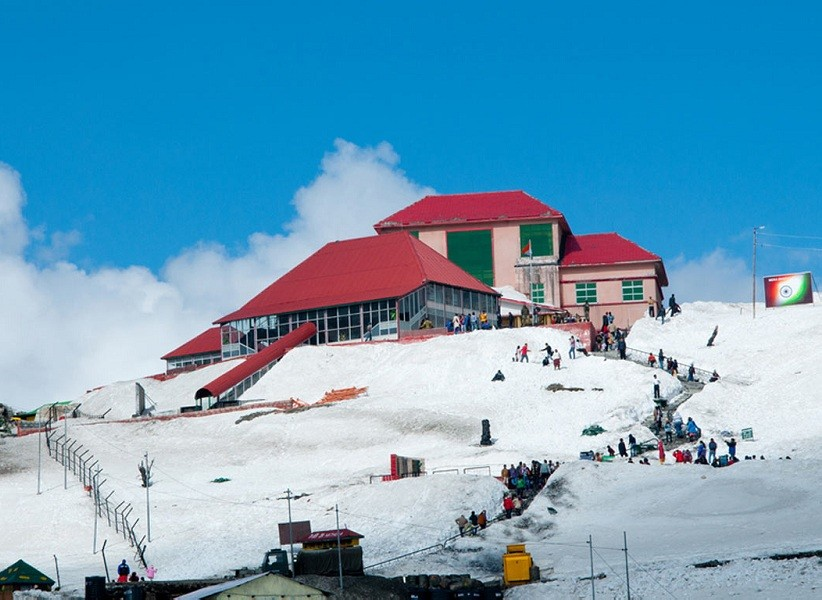
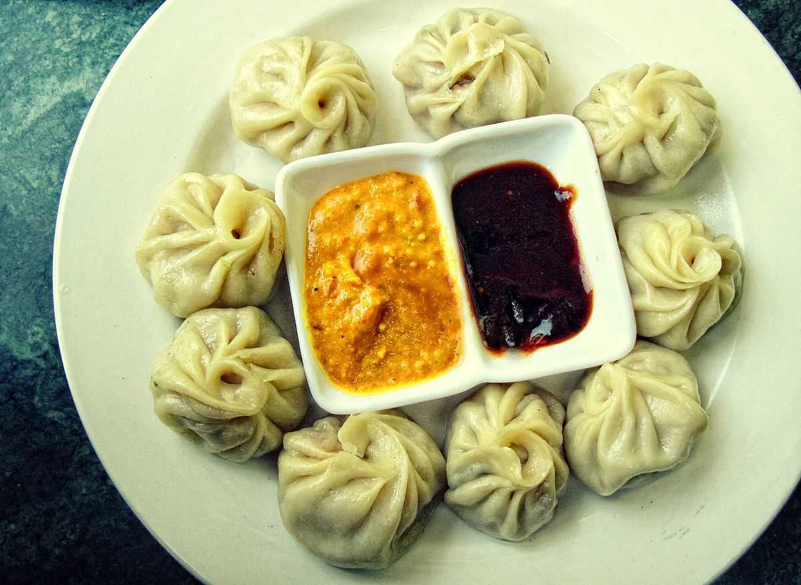
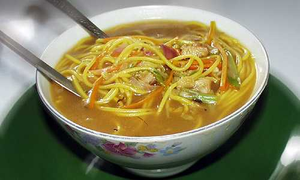
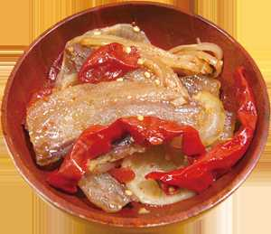

The best time to visit Gangtok is between March to April and October to November.
It is advisable to avoid traveling during the rainy season as it can lead to roadblocks and you might not be able to enjoy sightseeing.
If you are someone who loves to stay in the hustle bustle of the market, you may choose to stay at MG Marg. However, if you are a peace-seeker, you may choose to stay away from MG Marg.
If you are visiting places like Nathula Pass, Baba Mandir, etc., know that they are set at a higher altitude hence there is a lack of oxygen in the air.
Therefore, it is advisable to take adequate precautions before visiting. You may consult a doctor and carry along inhaler, especially if you have breathing problems or other medicines for vomiting, headache and motion sickness.

Tsomgo Lake is a day trip from Gangtok. It is advisable to leave for the lake early in the morning to reach on time and enjoy the views.
You will need a special area permit to visit the lake which can be obtained from the Sikkim tourism department at MG Marg Gangtok or you can ask your travel agent to arrange for the same. You will need your photo identity proof and two passport size photos to get the permit.
Beware of roadblocks due to heavy snow during the winter season.

Nathula Pass remains closed on Monday, Tuesday and Friday.
The pass remains inaccessible during winters due to heavy snowfall as the temperature drops down to as low as -250 C.
Beware of the winding roads leading to Nathula Pass which can lead to motion sickness. If you suffer from the problem, it is advisable to carry some medicines along.
You will need a special area permit to visit the place for which you will need your photo identity proof and two passport size photos. You can get the pass from zonal office or your travel agent can arrange for the same.
Photography isn’t allowed at the Nathula Pass.

Sikkim and Momos are complementary to one another.
Sikkim is the place that is going to serve you the best momos you'll ever taste in your life.
Believed to be of Tibetan origin and modulated by the Nepalese cuisine the momos are the lifeline of Sikkim.
Momo is a small package of steamed bun with some fillings. Momo typically consists of two parts - the cover and the filling.
Thukpa is a kind of noodle soup of Tibetan origin that has found its way to being one of the most loved food in Sikkim.
Thukpa is something that is very healthy and tasty at the same time - a rare combination to find, isn't it?
One can find both vegetables as well as chicken thukpa here and mind you both are worth trying.
Phagshapa is a strip of pork fat which is stewed with dry chillies and radish.
A spicy and tangy endeavour of this dish is rich in proteins and is made of no oil
Well for vegetarians, there is no substitute for pork in this dish so there is nothing much you can do. The Golden Dragon hotel in Gangtok serves the most authentic and delicious Phagshapa in the whole of Sikkim.
One of the main commercial areas of Sikkim, MG Road in Sikkim is located in MG Marg, Gangtok
It is an open mall in the heart of the city, and acts as the hotspot for all major shops, restaurants etc. in Gangtok
MG Road is largely famous for traditional Sikkimese cups, Thangkas and Choksi table designs. Apart from that, you can also shop for garments, souvenirs, trinkets, accessories, footwear and more. It is surely one of the best places for handicrafts shopping at Sikkim. Drop in anytime of the day before 7 p.

Located in East Sikkim, Lal Bazaar is fondly known as the soul of Sikkims kitchen.
It is the best place to shop for organic and farm products.
The produce are sold fresh from the market by local villagers.
Take a walk down the streets of this flea market to shop for dried fish and exotic eatables. You can also take a detour to the nearby posh shopping arena – MG Road.

It is one of the liveliest shopping places in Sikkim.
Located in MG Marg, Old Market is famous for fashion wear and accessories.
Old Market is always buzzing with the overwhelming tone of tourists who bargain for a good deal.
Make sure to check out the sets of Dogra jewellery and handicrafts that are sold here. You can also shop for walnuts and almonds which are again a best-seller here.